File: 000300.gt.txt (if the image is defective, simply delete all Arabic text and the line will be excluded)
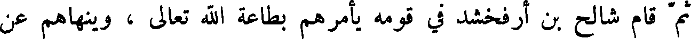
ثم قام شالح بن ارفخشد في قومه يأمرهم بطاعة الله تعالى ، وينهاهم عن
File: 000301.gt.txt (if the image is defective, simply delete all Arabic text and the line will be excluded)
معاصيه ، ويحذرهم ما نال أهل المعاصي من الرجز والعذاب . وكان قد ولد
File: 000302.gt.txt (if the image is defective, simply delete all Arabic text and the line will be excluded)
له عابر بعد أن أتت عليه مائة وثلاثون سنة ، ثم حضرته الوفاة ، فأوصى إلى ابنه
File: 000303.gt.txt (if the image is defective, simply delete all Arabic text and the line will be excluded)
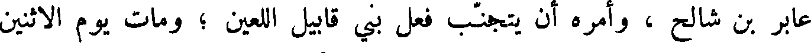
عابر بن شالح ، وأمره أن يتجنب فعل بني قابيل اللعين ؛ ومات يوم الاثنين
File: 000304.gt.txt (if the image is defective, simply delete all Arabic text and the line will be excluded)
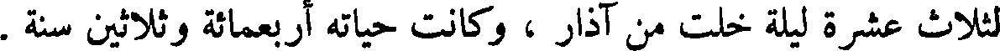
لثلاث عشرة ليلة خلت من آذار ، وكانت حياته أربعمائة وثلاثين سنة .
File: 000305.gt.txt (if the image is defective, simply delete all Arabic text and the line will be excluded)
بالكرامة ويسبحون على أسرتهم ويكبرون على حناجرهم وسيف ذو
File: 000306.gt.txt (if the image is defective, simply delete all Arabic text and the line will be excluded)
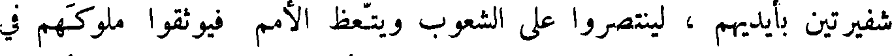
شفيرتين بأيديهم ، لينتصروا على الشعوب ويتعظ الأمم فيوثقوا ملوكهم في
File: 000307.gt.txt (if the image is defective, simply delete all Arabic text and the line will be excluded)
القيود ، وذوي الكرامة بسلاسل من حديد ، ليفعل بهم القضاء الذي كتب ،
File: 000308.gt.txt (if the image is defective, simply delete all Arabic text and the line will be excluded)
والحمد لله لكل الصديقين .
File: 000309.gt.txt (if the image is defective, simply delete all Arabic text and the line will be excluded)
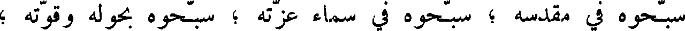
سبحوه في مقدسة ؛ سبحوه في سماء عزته ؛ سبحوه بحوله وقوته ؛
File: 000310.gt.txt (if the image is defective, simply delete all Arabic text and the line will be excluded)
سبحوه بعظمته ؛ سبحوه بصوت العزف ؛ سبحوه بالقيتار والكبر ، سبحوه
File: 000311.gt.txt (if the image is defective, simply delete all Arabic text and the line will be excluded)
بالبرابط والزمر ؛ سبحوه بالأوتار والكبر الطويل الخليلات ؛ سبحوه في صلاصل
File: 000312.gt.txt (if the image is defective, simply delete all Arabic text and the line will be excluded)
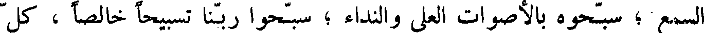
السمع ؛ سبحوه بالأصوات العلى والنداء ؛ سبحوا ربنا تسبيحا خالصا ، كل
File: 000313.gt.txt (if the image is defective, simply delete all Arabic text and the line will be excluded)
نفس بنفس .
File: 000314.gt.txt (if the image is defective, simply delete all Arabic text and the line will be excluded)
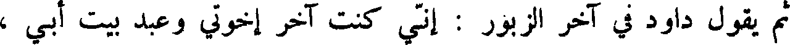
ثم يقول داود في آخر الزبور : أني كنت آخر اخوتي وعبد بيت أبي ،
File: 000315.gt.txt (if the image is defective, simply delete all Arabic text and the line will be excluded)
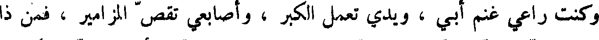
وكنت راعي غنم أبي ، ويدي تعمل الكبر ، وأصابعي تقص المزامير ، فمن ذا
File: 000316.gt.txt (if the image is defective, simply delete all Arabic text and the line will be excluded)
الذي حدث ربي عني ؟ هو ربي وهو الذي سمع مني وأرسل إلي ملائكته ،
File: 000317.gt.txt (if the image is defective, simply delete all Arabic text and the line will be excluded)
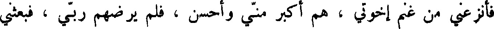
فانزعي من غنم أخوتي ، هم اكبر مني واحسن ، فلم يرضهم ربي ، فبعثي
File: 000318.gt.txt (if the image is defective, simply delete all Arabic text and the line will be excluded)
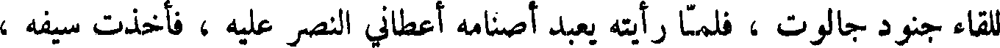
للقاء جنود جالوت ، فلما رايته يعبد أصنامه أعطاني النصر عليه ، فأخذت سيفه ،
File: 000319.gt.txt (if the image is defective, simply delete all Arabic text and the line will be excluded)
فقطعت رأسه .
File: 000320.gt.txt (if the image is defective, simply delete all Arabic text and the line will be excluded)
ثم إن بني إسرائيل وقعوا في داود فاشتد غضب الله عليهم فأمر الله
File: 000321.gt.txt (if the image is defective, simply delete all Arabic text and the line will be excluded)
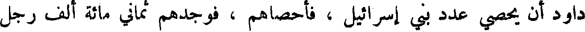
داود أن يحصي عدد بني إسرائيل فأحصاهم فوجدهم ثماني مائة ألف رجل
File: 000322.gt.txt (if the image is defective, simply delete all Arabic text and the line will be excluded)
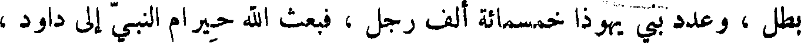
بطل ، وعدد بني يهوذا خمسمائة ألف رجل ، فبعث الله حيرام النبي إلى داود ،
File: 000323.gt.txt (if the image is defective, simply delete all Arabic text and the line will be excluded)
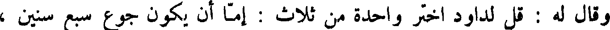
وقال له : قل لداود اختر واحدة من ثلاث : إما أن يكون جوع سبع سنين ،
File: 000324.gt.txt (if the image is defective, simply delete all Arabic text and the line will be excluded)
وإما أن تدفع إلى أعدائك فيعزونك ثلاثة اشهر ، ويطرحونك من سلطانك ،
File: 000325.gt.txt (if the image is defective, simply delete all Arabic text and the line will be excluded)
وإما أن يكون موت شديد ثلاثة أيام ؟ فضاق داود لذلك ، وقال : ربنا أولى
File: 000326.gt.txt (if the image is defective, simply delete all Arabic text and the line will be excluded)
بنا من خلقه ! فسلط الله عليهم الموت ، فمات في ساعة واحدة سبعون ألف
File: 000327.gt.txt (if the image is defective, simply delete all Arabic text and the line will be excluded)
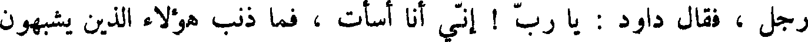
رجل ، فقال داود : يا رب ! أني أنا أسأت ، فما ذنب هؤلاء الذين يشبهون
File: 000328.gt.txt (if the image is defective, simply delete all Arabic text and the line will be excluded)
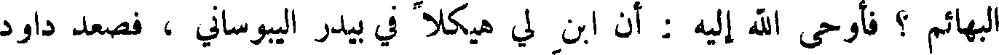
البهائم ؟ فأوحى الله إليه : أن ابن لي هيكلا في بيدر اليبوساني ، فصعد داود
File: 000329.gt.txt (if the image is defective, simply delete all Arabic text and the line will be excluded)
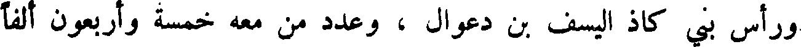
ورأس بني كاذ اليسف بن دعوال ، وعدد من معه خمسة وأربعون ألفا
To Save: `Ctrl+s`, make sure to choose `Webpage, complete`!